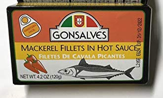
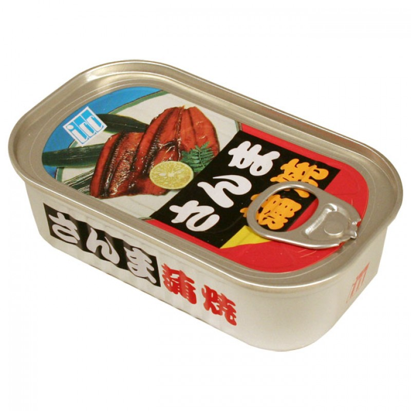
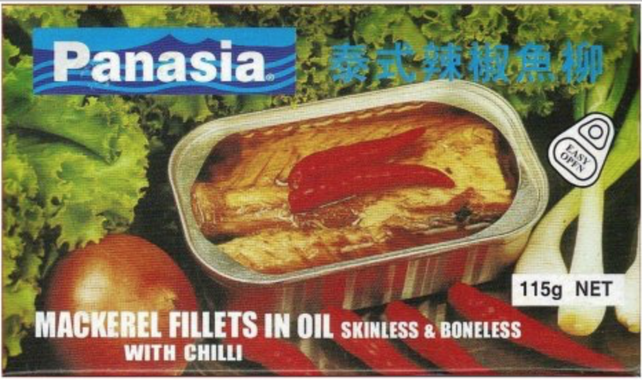
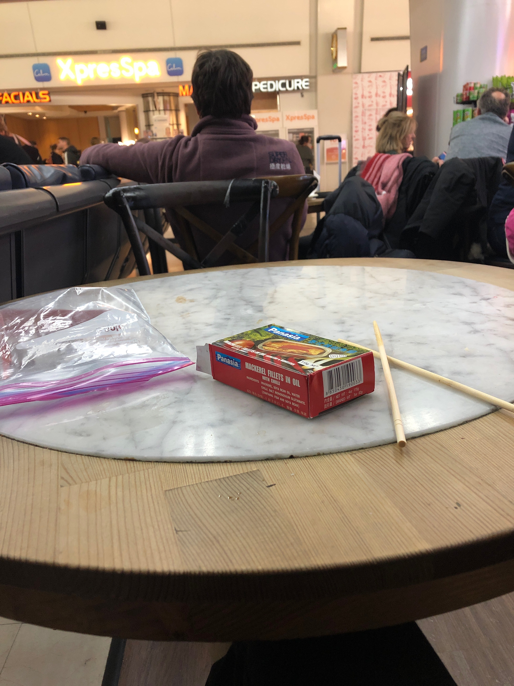

20.12.2019
tinned mackerel hunt nyc
One of Market Basket's many joys is the Gonsalves brand 'tinned mackerel in hot sauce'. It's a portuguese brand, and comes in in a rich olive oil with chillies and pickled vegetables, cloves and black peppercorns. The other Gonsalves tinned fish products are good too -- but nothing compared to their mackerel.

On moving to New York, I'd assumed it would be easy to get hold of Gonsalves brand products. Not so -- turns out they are actually a very small company, based in Rhode Island. Their presence in Somerville Market Basket is through the wisdom of Market Basket, rather than them being a common brand.
After a few fruitless searches, I emailed the Gonsalves brand through their webpage, though heard nothing for over a month. In the meantime, I looked further afield. My first attempt was to branch out: I bought a tin of beautifully packaged ICC brand tinned grilled saury from Hong Kong supermarket, but it was disappointing: overly-sweet and too watery. I think it would've been improved by some rice and mayo, but it didn't hold up on its own.

Second time around, back in Hong Kong supermarket, but this time with mackerel. I bought a tin of Panasia brand 'mackerel fillets in oil with chilli'. Though lacking some of the richness of the Gonsalves brand (no olive oil or cloves), these are good quality, and a real contender (and at $1.69, somewhat cheaper).

Panasia brand also have a great website, complete with
'tinned fish brochures', suggesting the existence of a really large range of Panasia mackerel products, including tom yum and green curry. Like the Gonsalves mackerel, they make a great packed lunch: here's one I gave to gary to take to JFK (image taken in JFK).

It turns out that
Fei Long supermarket (on 8th ave in Brooklyn), has a much larger range of Panasia products, and it was from there that I got to try the 'mackerel fillets with green peppercorn' (really fantastic, also currently stocked at Hong Kong supermarket), and the 'salted mackerel fillet with ginger' (this has a much less lovely texture, but fries really well as part of an omelette). The green peppercorn ones are the best I've had yet, on a par with Gonsalves for sure.
After nearly a month, Henry Gonsalves himself wrote back, and said that to get hold of Gonsalves products I'd need to venture to either Ironbound or Elizabeth New Jersey, with one of their 'best tinned fish customers' being
Jefferson Supermarket, at 724 Jefferson Ave, Elizabeth, 07201. Have not been yet, but watch this space!